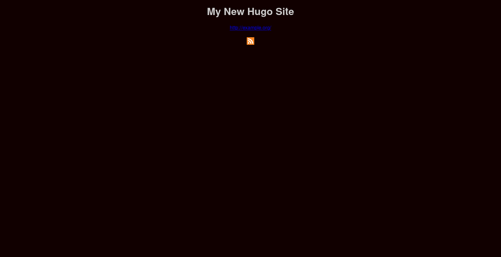

Using The Hugo Static Site Generator
Hugo is a light weight static site generator that creates full, well-structured web sites from Markdown files.
It is a package in the Arch Linux repository.
$ sudo pacman -S hugoresolving dependencies...looking for conflicting packages...Packages (1) hugo-0.109.0-1Total Download Size: 11.44 MiBTotal Installed Size: 53.61 MiB:: Proceed with installation? [Y/n]Git will also be used by the instructions on this page, and it can obviously be installed as follows.
$ sudo pacman -S gitresolving dependencies...looking for conflicting packages...Packages (4) perl-error-0.17029-4 perl-mailtools-2.21-6 perl-timedate-2.33-4 git-2.39.1-1Total Download Size: 5.83 MiBTotal Installed Size: 35.60 MiB:: Proceed with installation? [Y/n]The following command creates a blank web site named my-site.
$ hugo new site my-siteA theme is needed for each web page. In this example, Luke Smith's Hugo theme (Lugo) is used. Mr. Smith also has a very good Hugo video tutorial.
$ cd my-site$ git clone https://github.com/lukesmithxyz/lugo themes/lugoA line should be added to the config.toml file in order to activate the theme.
$ echo "theme = 'lugo'" >> config.tomlIf one wants to modify the CSS of the site, the CSS file should be copied to the static directory.
$ cp themes/lugo/static/style.css static/The site can be seen locally in a browser by running hugo server and viewing http://localhost:1313/ in a browser. However, this does not work remotely through SSH unless a browser is run through SSH.
The site can be generated via the command hugo. The site will be generated in the public directory.
$ hugoHowever, in order to serve the site through Apache, I would like to generate the site in the /srv/http/ directory. The hugo command can be passed the -d flag in order to give it a destination directory.
$ hugo -d /srv/http/The default site can then be seen at the server's IP address.
The config.toml file contains the base configuration of the site.
baseURL = 'http://example.org/'languageCode = 'en-us'title = 'My New Hugo Site'theme = 'lugo'Those attributes can all be changed. Additionally, some extra lines can be added if HTML is to be used within the Markdown files that will generate pages. The following is the version of the config.toml file that is used in the example below.
baseURL = 'http://192.168.1.29'languageCode = 'en-us'title = 'Various-and-Sundry.com'theme = 'lugo'[markup.goldmark.renderer]unsafe= trueA new page can be created using the command hugo new page.md where page.md is the name of the page followed by the Markdown file extension. Markdown can then be added to it to populate the page. For organization's sake, these files can also be created within subdirectories.
$ hugo new page.mdBelow is an example of a Markdown file that uses most of the basic Markdown features. An image of the page that this creates is then shown below that. This page does use one locally stored image, which can be downloaded and stored in the static/images directory as shown below.
$ mkdir static/images$ wget --no-check-certificate -P static/images/ https://d33wubrfki0l68.cloudfront.net/c38c7334cc3f23585738e40334284fddcaf03d5e/2e17c/images/hugo-logo-wide.svg
---
title: "Page"
date: 2022-12-22T02:50:47Z
draft: false
tags: ['these', 'are', 'tags']
---
# Here Is A Heading
## Text
Here is some text, which is written in Markdown.
Here is some *italicized text* and some **bold text**. ***Both*** can be done at the same time too.
Here is some code: `System.out.println("Hello World!");`
Everyone should visit [Various-and-Sundry.com](https://various-and-sundry.com "This text is displayed when one hovers over the link").
Using <code>HTML</code> is <em>fine</em> too.
## Blockquote
> But what things were gain to me, those I counted loss for Christ.
>
> Yea doubtless, and I count all things but loss for the excellency of the knowledge of Christ Jesus my Lord: for whom I have suffered the loss of all things, and do count them but dung, that I may win Christ,
>
> And be found in him, not having mine own righteousness, which is of the law, but that which is through the faith of Christ, the righteousness which is of God by faith:
>
> That I may know him, and the power of his resurrection, and the fellowship of his sufferings, being made conformable unto his death;
>
> If by any means I might attain unto the resurrection of the dead.
>
> Not as though I had already attained, either were already perfect: but I follow after, if that I may apprehend that for which also I am apprehended of Christ Jesus.
## Lists
* list item 1
* another list item
* list item 3
* this is an indented item
* this is another one
* this is another normal item
1. this
2. is
1. a
3. numbered
4. list
## Code Block
#include <stdio.h>
int main() {
// Here is a comment
printf("Hello World!");
return 0;
}
## Images

[](https://gohugo.io/)
## Horzontal Rule
___
## URL Links
<https://www.various-and-sundry.org>
<someone@various-and-sundry.com>
An _index.md can be created to add content to the home page. One can also do that in a subdirectory to modify the main page of the subdirectory.
| Previous | Published February 15, 2023 |
|---|